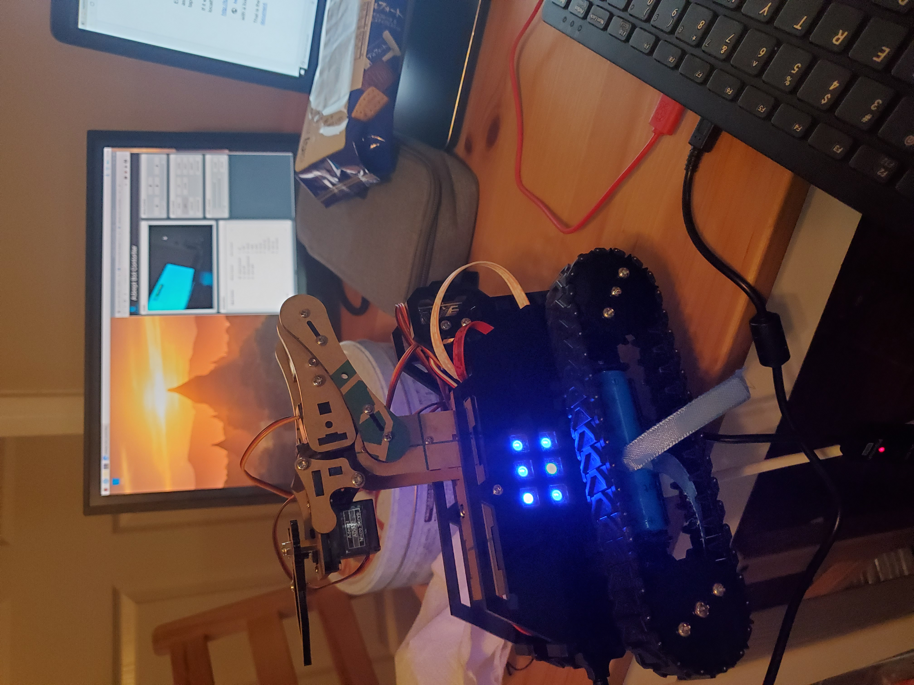

Robot Arm User Interface

In my Robotics Engineering course, I learned a lot of skills of writing web servers with Python, Node.js, and mqtt, etc. I wrote lots of web programs such as monopoly, controlling LED on Raspberry Pi extension board using web servers. Then, I deployed thn onto the cloud using Firebase. Combining these skills, I was able to build a MATLAB App user interface that allow anybody in the world to control a simulated robot arm online. Given joint angle degrees using either the slide bar or text field and then click Go, the 3D model of the robot arm will move to the correct position. Similarly, given a 3-dimensional coordinate, the system can use inverse kinematics to calculate the correct joint angles to achieve such pose and move the simulated arm to the correct position.
Controlling the Actual Tank
The robot tank shown in the picture is completely assembled by myself one piece at a time. The robot was controlled by a Raspberry Pi 4 inside the tank body. By using MQTT server, I was able to achieve mutual communications between the tank and my MATLAB user interface. Therefore, my robot arm simulation can control the actual tank. Notice the five buttons on the top left corner of the UI? They can control the motion of the tank! The coolest part is that we can achieve all the functions that mentioned in the simulation section, but this time, the actual robot moves together with the 3D model!